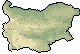

Bulgaria
Bulgaria
Bulgaria is a beautiful, small country in the south-eastern corner of Europe. It has a population
of some 8 million people and borders on Greece, Macedonia, Serbia, Romania and Turkey, as well as
the Black Sea. Few people seem to know much about Bulgaria, which is surprising, given its rich history
and interesting culture. Whilst most people probably know it is home to the famous yogurt culture
"bacillus bulgaricus" (considered to be of great benefit to your health), few people would know
it is home to the oldest gold ornaments in the world.
Most people know the Russians use the Cyrillic alphabet, few know that this alphabet was created in
Bulgaria - by the brothers Cyril and Methodius (who were themselves, in fact, Macedonian). Most people
have probably heard of the Greek poet and musician Orpheus, but
few know that he spent most of his time wandering the Rhodope mountains in Bulgaria - also known as the
"Land of Orpheus". If you're British you may remember the incident involving a Bulgarian dissident and
a poison tipped umbrella. But who knows, for example, that a Bulgarian folk song (Valya Balkanska) was
chosen to accompany pieces by Mozart and Beethoven on the Voyager space probe, and is still now "going
where no man has ever gone before"? Bulgaria is one of the best kept secrets on the planet. In fact
Bulgaria appears to be so good at hiding information, that Bill Clinton should be taking notes!
A Brief History Of Bulgaria...
Bulgaria has been inhabited for many thousands of years. There appear to be archeological sites pretty
much everywhere you go in Bulgaria. A testament to the fact that it has been inhabited by the Thracians,
Greeks and Romans - all leaving a substantial footprint in the country. The first Bulgarian state was
formed in 681 by Khan Asparukh - making it pretty much the oldest state in Europe. Apart from an 180
year period of rule by the Byzantine empire, the state lasted until 1362, when Bulgaria was conquered
by the Ottoman Turks.
Whilst the Turks ruled Bulgaria for over 500 years, Bulgarian culture and identity managed to survive in isolated monasteries. This is one of the reasons monasteries are given such cultural importance in Bulgaria. Towards the end of 18th century the Bulgarian identity started to reassert itself and Bulgarian art, music and literature started to flourish. Finally, in 1878, after some failed uprisings, the year- long Russian-Turkish War and numerous massacres and atrocities, Bulgaria gained independence from the Turks.
The next 70 odd years through to the end of 2nd World War, were turbulent times for Bulgaria and the Balkan Peninsula. There was much fighting between the Serbs, Greeks, Bulgarians, Macedonians and Turks in the lead up to and during the 1st World War. In an attempt to gain control over Macedonia, Bulgaria sided with the Germans during this war, thus coming out on the losing side. At the start of the 2nd World War Bulgaria declared itself neutral, however with German troops massing on the Romanian-Bulgarian border, Bulgaria sided with the Germans to avoid a war it could not win. It thus declared war on France and Britain, but crucially not on Russia. Also, it refused to deport the 50,000 odd Jews living on Bulgarian territory. Thus, despite playing only a very minor part in the War, Bulgaria ended up on the losing side. The Russians finally invaded in 1944 and took control of the country, setting up a communist government in 1945.
For the next 45 years Bulgaria was subject to a Communist government intolerant of any other political
view points. However, the regime was not all bad, and thanks to Russian investment, the country was
transformed from an agricultural back water to an industrialised nation by the mid 1970s. However when
the Russian economy started to falter, so did Bulgaria, leading to the collapse of communism in 1989.
However, Bulgaria avoided the violent turmoil of its communist neighbours and held peaceful elections
in 1990. Since then the prosperity capitalism seemed to promise has eluded Bulgaria and the country is
still now trying to recover from economic collapse and hyper-inflation in the late 1990s.
Bulgarians have become very distrustful of all politicians due to the high level of corruption in the
country. This is in itself a legacy of the transition from communist to democratic state, for whilst
it was peaceful, it did not remove the old communist regime from power and former communist leaders
are still running most Bulgarian political parties. It is important to note however, that the political
corruption in Bulgaria does not affect tourists and Bulgaria is certainly the safest country to visit
in the area, if not the majority of Eastern Europe. On the positive side, a currency board has pegged
the lev to the German Mark (and then the Euro) since 1999 and this has lead to macro-economic
stability and growth in the last 4 years.